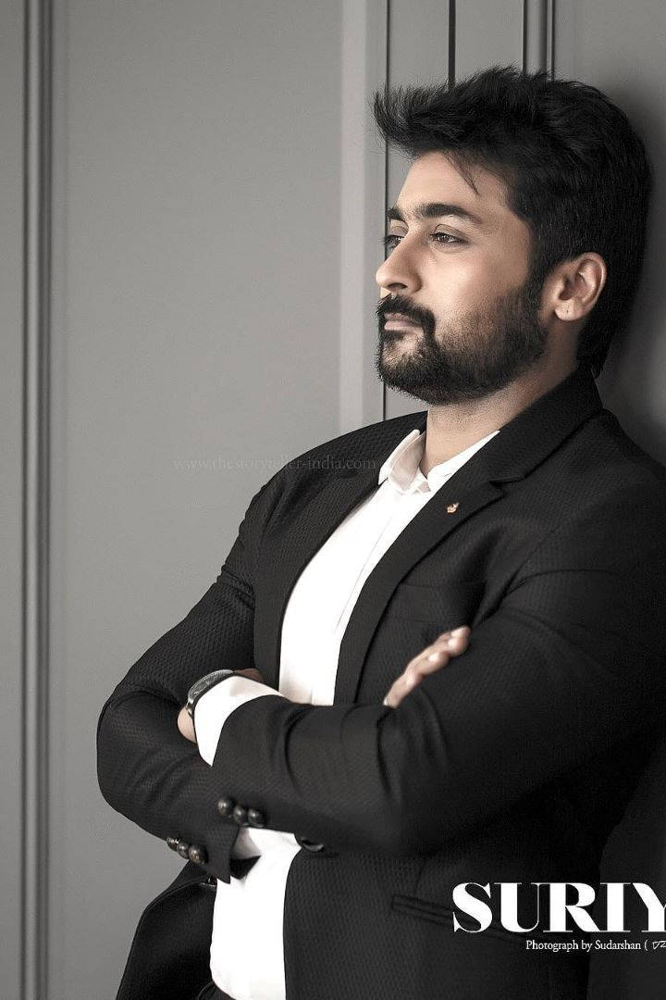

Saravanan Sivakumar (born 23 July 1975), known by his stage name Suriya, is an Indian actor and film producer. He primarily works in Tamil cinema where he is one of the highest paid actors.[3][4][5][6] He has received numerous awards including two National Film Awards,[7] six Filmfare Awards South, five Tamil Nadu State Film Awards and two South Indian International Movie Awards.[8] Suriya has featured six times in the Celebrity 100 list of Forbes India, which takes into account the earnings of Indian celebrities. After making his debut in Nerukku Ner (1997) at the age of 22, Suriya landed his breakthrough role in Nandha (2001) and then had his first major commercial success with the thriller Kaakha Kaakha (2003). Following award-winning performances of a conman in Pithamagan (2003) and a hunchback in Perazhagan (2004), he played a man suffering from anterograde amnesia in the 2005 blockbuster Ghajini. He rose to stardom with dual roles of a father and son in Gautham Vasudev Menon's semi-autobiographical Vaaranam Aayiram (2008). His status as an action star was established with roles of a smuggler in Ayan (2009), and an aggressive cop in the Singam trilogy. He also found success with the science fiction films 7aum Arivu (2011) and 24 (2016) and then went on to work in critically acclaimed films like Soorarai Pottru (2020) and Jai Bhim (2021), the former of which earned him the National Film Award for Best Actor.[9] Suriya is the elder son of actor Sivakumar and his younger brother Karthi is also an actor. In 2006, he married actress Jyothika whom he co-starred with in 7 films. In 2008, he began Agaram Foundation, which funds various philanthropic activities. The year 2012 marked his debut as a television presenter with the Star Vijay game show Neengalum Vellalam Oru Kodi, the Tamil version of Who Wants to Be a Millionaire?. In 2013, Suriya founded the production house 2D Entertainment.[10][11]
uriya was born as Saravanan on 23 July 1975 in Madras (now Chennai), Tamil Nadu, to actor Sivakumar and his wife Lakshmi. He attended Padma Seshadri Bala Bhavan School[12] and St. Bede's Anglo Indian Higher Secondary School in Chennai,[13] and obtained his under graduate degree B.Com from Loyola College, Chennai.[14] Suriya has two younger siblings, a brother Karthi and a sister Brindha. Suriya with his wife Jyothika at the launch of her film Kaatrin Mozhi Suriya is married to actress Jyothika. The couple, after dating for several years, got married on 11 September 2006.[15][16] They have two children, a daughter and a son.[17][18]
1997–2002: Early career
Prior to his career in films, Suriya worked at a garment exports factory for eight months.[19] To avoid nepotism, he did not reveal himself to his boss as Sivakumar's son, but his boss ultimately learnt the truth himself.[20][21] He was initially offered the lead role by Vasanth in his film Aasai (1995), but he rejected the offer citing a lack of interest in an acting career.[14] He later debuted in Vasanth's own 1997 film Nerrukku Ner, produced by Mani Ratnam when he was 22 years of age. The stage name "Suriya" was bestowed to him by Ratnam to avoid a clash of names with established actor Saravanan. The name "Suriya" was frequently used for characters in Ratnam's films.[22] Vijay, who co-starred with him in the film, would also go on to become a leading contemporary actor in Kollywood.[23] This was followed by a series of roles in commercially unsuccessful films in the late 1990s. In 1998, he starred in the romantic film Kaadhale Nimmadhi. In July the same year, he had another release Sandhippoma. Subsequently, he acted with Vijayakanth in the film Periyanna (1999), directed by S. A. Chandrasekhar. He then appeared twice with Jyothika in Poovellam Kettuppar (1999) and Uyirile Kalanthathu (2000). In 2001, he starred in Siddique's comedy film Friends, also co-starring Vijay, which became a commercial success. Suriya confessed that he struggled due to lack of confidence, memory power, fighting or dancing skills in his early career, but it was actor Raghuvaran, one of his mentors, who advised him to create his own identity, rather than stay under his father's shadow.[24] His major break came in the form of the action drama Nandha, which was directed by Bala. Playing the role of an ex-convict who is very attached to his mother, he received a Tamil Nadu State Film Award for Best Actor, in addition to his first nomination for the Filmfare Award for Best Actor – Tamil.[25] His next venture was Vikraman's romantic drama Unnai Ninaithu followed by the action drama Sri and the romantic drama Mounam Pesiyadhe directed by Ameer Sultan, the lattermost of which earned him his second nomination for the Filmfare Award for Best Actor – Tamil.
2003–2007: Experimentation and success
In 2003, he starred in Gautham Vasudev Menon's Kaakha Kaakha, a film about the life of a police officer. The film received positive reviews upon release with a critic from Rediff.com claiming that "Suriya as Anbu Selvan fits the role and this film is certainly a career high for him".[3] The film emerged as Suriya's first major blockbuster at the box office and earned him his third nomination for the Filmfare Award for Best Actor – Tamil. His portrayal of a happy-go-lucky village crook with a comic touch in Bala's Pithamagan, co-starring Vikram, won him the Filmfare Award for Best Supporting Actor – Tamil.[26] In 2004, he played dual roles in Perazhagan, as an aggressive boxer and a handicapped phone booth keeper. Suriya's performance received highly positive reviews from critics with a reviewer describing it as "Suriya deserves appreciation for his astounding performance. He is at his best be it humor or action. The actor has scored a hat trick".[27] The film emerged as a commercial success at the box office,[28] and Suriya won his first Filmfare Award for Best Actor – Tamil for his performance.[29] The same year, he portrayed the role of a student leader in Mani Ratnam's political drama Aayutha Ezhuthu along with Madhavan and Siddarth. The film received high critical acclaim and was also commercially successful. Suriya with Ram Gopal Varma on the sets of Rakta Charitra 2 Suriya signed on to feature in the psychological thriller, Ghajini directed by A. R. Murugadoss in November 2004. He played the role of a businessman suffering from anterograde amnesia. Ghajini emerged as a blockbuster at the box office and was the third highest-grossing Tamil film of the year. Suriya's performance was unanimously praised, with a reviewer from Sify citing that "the film is driven by Suriya's riveting performance".[30] The film was dubbed in Telugu under the same name and was again a box office success, earning him fame in Andhra Pradesh.[31] Suriya received his fifth nomination for the Filmfare Award for Best Actor – Tamil for his performance in the film. Later that year, he worked in Hari's action film Aaru, which was moderately successful at the box office.[32] His performance received positive reviews with a reviewer citing that "Suriya keeps you riveted to the seats with another wholesome effort".[33] In 2006, appeared in a cameo role in Jyothika starrer June R. In the same year he starred with Jyothika and Bhumika Chawla in N. Krishna's film Sillunu Oru Kaadhal. The film took a strong opening. It had an average response from critics,[34][35] but his performance was praised, with a reviewer from Sify citing that "Suriya pitches in with yet another fantastic performance, be it the responsible husband and father, or the cool dude at college".[36] In 2007, his only release was director Hari's Vel, where he was paired with Asin for the second time after Ghajini. The film, which featured him in dual roles, was commercially successful.
2008–2013: Continued commercial success and stardom
His next release was another collaboration with Gautham Vasudev Menon after the success of Kaakha Kaakha. Suriya began work on Menon's biopic Vaaranam Aayiram in November 2007.[38] Playing dual roles for the third time in his career, Suriya appeared as father and son, with both characters demanding scenes shot throughout their lives ranging from scenes as a 16-year-old to scenes as a 65-year-old. During the production of the film, Suriya described the project as "unique" and "straight from the heart", describing the physical hardships he endured during the making.[39] He lost weight and prepared a six pack for the film through an eight-month fitness regime without steroids, with the move being a trend-setter for other leading actors from South India.[40][41] The film, which also featured Simran, Sameera Reddy and Divya Spandana in prominent roles, became commercially successful at the box office upon release and received positive reviews from film critics, with Suriya's performance being lauded. A critic from Rediff labelled the film as his "magnum opus", citing that he is "perfect" and that the film for him is a "justified triumph".[42] Similarly, critics cited Suriya's performance as "outstanding" and claimed that the film "works because of his performance", whilst other reviewers claimed the film was an "out and out Suriya show".[43][44] His portrayals also fetched him several notable awards, including his second Filmfare Award for Best Actor – Tamil, a Tamil Nadu State Film Award Special Prize and the Vijay Award for Best Actor for 2008.[45] The film also went on to receive a National Film Award for Best Feature Film in Tamil for 2008.[46] In 2009, Suriya's first release was K. V. Anand's action-thriller Ayan. With Suriya portraying the role of a smuggler, the film also featured Prabhu as his guardian and Tamannaah Bhatia as the lead actress. The film was shot extensively across Tanzania, Namibia, Malaysia and India and featured acrobatic stunts by Suriya, without the use of a stunt double.[47] Upon release, it received positive reviews, with critics citing the film as a "must watch" and Suriya's performance was yet again acclaimed and he found himself nominated for leading awards and won the Vijay Award for Entertainer of the Year, in addition to his seventh nomination for the Filmfare Award for Best Actor – Tamil.[48] The film's success saw Suriya emerge as the most profitable leading actor in Tamil films, following a hattrick of large commercial hits, with film journals suggesting that his success was due to "experiments within the commercial format" and he was successful in "avoiding being typecast". The film ran 100 days in 3 states (Tamil Nadu, Kerala and Andhra Pradesh). Ayan was the highest-grossing Tamil film of 2009.[49][50] His next film, K. S. Ravikumar's action entertainer Aadhavan also achieved commercial success, while Suriya's depiction of a hitman was praised. A critic from Sify.com labelled it as an "out and out Suriya show", stating that "the film rides on the magic of the actor, and his zany shenanigans alone makes it worth a watch" and Rediff.com cited that "he sings, dances, and fights with absolute sincerity, but when he looks at you with tears in his eyes in an emotional scene tailor-made for him, the applause hits the roof", concluding that it is "completely his film".[51][52] In 2010, he starred in his 25th release, Singam directed by Hari, in which he played the role of a police officer from a small village going to work in the city. The film received positive reviews with The Hindu newspaper noting that "Suriya shows that be it a performance-oriented role or a formulaic concoction he can deliver", while Sify.com stated "Ultimately it is Suriya who carries the film to the winning post. His passion and the way he brings an ordinary regular larger-than-life hero character alive on screen is lesson for other commercial heroes."[53][54] Indian cricketer Mahendra Singh Dhoni stated that he became "a great fan of Suriya" after watching Singam.[55] The film won Suriya his second Vijay Award for Best Entertainer, in addition to his eighth nomination for the Filmfare Award for Best Actor – Tamil, and subsequently went on to become the second highest-grossing film of the year.[56] He made his Telugu and Hindi debut in the second part of Ram Gopal Varma's political drama Rakta Charitra in 2010.[57] The film was released in Tamil as Ratha Sarithiram, which was partly dubbed and partly reshot.[58] Suriya subsequently went on to appear as himself in three consecutive guest appearances, appearing alongside Trisha and Madhavan in a song in Manmadhan Ambu (2010), before also starring in K. V. Anand's Ko and Bala's Avan Ivan (2011). Suriya and Karthi at the launch of Knack Studio His only release in 2011 that featured him in a starring role was A. R. Murugadoss's science fiction action thriller 7aum Arivu. Suriya played dual roles and starred alongside Shruti Haasan in the film, as a circus artist and as the Buddhist monk named Bodhidharma, who lived in the 6th century. The film met with mixed reviews, but was a commercial success and became his first film to gross above ₹1 billion,[59][60] and earned him his ninth nomination for the Filmfare Award for Best Actor – Tamil. His 2012 release was the K. V. Anand-directed action thriller Maattrraan in which he played the role of conjoined twins, Vimalan and Akhilan. The film received mixed reviews, and ended up being an average grosser.[61] Critics however praised the film's technical aspects and VFX, in addition to Suriya's performance, which earned him his tenth nomination for the Filmfare Award for Best Actor – Tamil.[62] Suriya himself dubbed for one of his characters in the Telugu dubbed version while his brother Karthi dubbed for his other character.[63] In January 2012, Suriya was named as the official host of the new game show to be presented on STAR Vijay, Neengalum Vellalam Oru Kodi, the Tamil version of Who Wants to Be a Millionaire?. It began airing on 27 February 2012 and ended on 12 July.[64] His next film was Singam II, a sequel to his 2010 film Singam. The film released on 5 July 2013 to mixed reviews from critics. However, the film received a huge opening and emerged one of the highest grossing Tamil films of all time.[65] Suriya was once again acclaimed for his portrayal of Durai Singam and his performance was hailed as "the film's backbone".[66] Singam II was a box office hit and became his second ₹1 billion grosser.[67] Suriya received his eleventh nomination for the Filmfare Award for Best Actor – Tamil for his performance in the film. Suriya distributed the film through his production company 2D Entertainment, founded in 2013. He had signed on to feature in Gautham Vasudev Menon's film Dhruva Natchathiram and reportedly waited for six months to start filming. However, in October 2013, he backed out due to differences with the director and the project lagging too much.[68] In a 2013 interview with the Bangalore Mirror, film producer G. Dhananjayan called Suriya as the "biggest star" in contemporary Tamil cinema and claimed it was mainly because his popularity extended to Telugu and Malayalam speaking audiences as well.[69][70]
2020–present: Career resurgence
His next film, the biographical drama Soorarai Pottru, was based on the life of Air Deccan founder Captain G. R. Gopinath. It was directed by Sudha Kongara, produced by Suriya's 2D Entertainment and co-produced by Guneet Monga under Sikhya Entertainment.[84] He sang "Maara Theme" and its Telugu version "Maha Theme" for the film, which was released directly on Amazon Prime Video on 12 November 2020. The film received widespread critical acclaim and won Suriya his first National Film Award for Best Actor, in addition to his third Filmfare Award for Best Actor – Tamil.[7] The film became the most-watched regional language film in the history of Amazon Prime in India.[85][86][87] His next work Navarasa, a Netflix anthology series produced by Mani Ratnam, was released on 6 August 2021. He acted in the 9th episode titled Guitar Kambi Mele Nindru, directed by Gautham Vasudev Menon. The artists, technicians and directors of the series contributed towards the film without remuneration, with only the costs of production being associated. The profits earned from the project were donated to the members of the Film Employees Federation of South India (FEFSI), who were affected by the COVID-19 pandemic.[88] He then played Justice K. Chandru in T. J. Gnanavel's legal drama Jai Bhim. The film, which was his own production, was distributed by Amazon Prime Video on 2 November 2021. It received positive reviews from critics, who praised the story, performances, direction and social message, and several publications listed the film as "one of the best Tamil and Indian films of 2021".[89] The film was shortlisted among the 276 films eligible for nomination at the 94th Academy Awards,[90] but failed to make the final list of nominations.[91] Jai Bhim also became the first Indian film to be featured on the Oscars' YouTube channel.[92][87] Suriya won the Filmfare Award for Best Film – Tamil as producer of the film, and received his fourteenth nomination for the Filmfare Award for Best Actor – Tamil for his performance in the film, but lost the award to his performance in Soorarai Pottru. The same year, he produced two films, Raame Aandalum Raavane Aandalum and Udanpirappe. Suriya's next film Etharkkum Thunindhavan, also known under the initialism ET, directed by Pandiraj and produced by Kalanithi Maran under Sun Pictures released in theatres on 10 March 2022 to mixed reviews. He also dubbed for himself in Telugu.[93] Following that film, he appeared in a cameo as Rolex in Lokesh Kanagaraj's Vikram starring Kamal Haasan, Vijay Sethupathi and Fahadh Faasil. The film is part of the Lokesh Cinematic Universe. He also appeared as himself in R. Madhavan's Rocketry: The Nambi Effect. Suriya also confirmed that he would have a cameo in the Hindi remake of Soorarai Pottru, an own production with Akshay Kumar in the lead.[6] The same year, Suriya became the first South Indian actor to be invited to join the Academy of Motion Picture Arts and Sciences. He was among 397 eminent film personalities invited to join the Academy for the 95th Academy Awards.[94][95] After the release of Etharkkum Thunindhavan, Suriya started work on Bala's Vanangaan.[96][97] However, in December 2022, it was confirmed that he left the project due to differences with the director. Suriya's other productions in 2022 were Oh My Dog and Viruman. He is currently working on Siva's Kanguva. The film is produced jointly by Studio Green and UV Creations, and features Disha Patani as the female lead. It is scheduled to be released in theatres in early 2024.[98]
Humanitarian and social causes
Suriya has been a patron of Tamil Nadu Kidney Research Foundation since 2007.[99][100] In the same year, he also acted in a short film on AIDS awareness.[99] He has also lent his voice to other noble causes such as "Save The Tigers" campaign, which aids in the protection and preservation of Tigers in India, and "REACH", a non-profit that cures TB patients for free using supervised medication programs.[101][102] In 2019, Suriya criticised the union government's Draft National Education Policy (NEP), claiming that several of its features would affect students from rural areas. He said the policy sought to impose entrance and qualifying examination on students and the three language formula in Tamil Nadu. His statements were criticized by BJP and AIADMK leaders.[103][104] Suriya issued a statement on National Eligibility cum Entrance Test (NEET) in September 2020 after three students committed suicide. He criticized the government for enacting laws that created inequalities and criticized the judiciary saying that "while the court is run through video conferencing, they have ordered students to take the exams in person during COVID-19". He compared NEET to "manuneethi" and a tale in the Mahabharata in which Drona demanded Ekalavya's thumb as payment for training, going on to suggest that "the skills and abilities of our children should not be determined by one test".[105] He asked people to raise their voice against the NEET which "prevents medical courses to students from normal families".[106] While Madras High Court judge S.M. Balasubramaniam urged the chief justice to take contempt action against Suriya, this was opposed by six retired judges.[107] Suriya's wife Jyothika had on a separate occasion requested to contribute to schools and hospitals the same as temples. Although the Bharatiya Janata Party (BJP) and other right-wing organisations condemned them, they garnered widespread support from people advocating equality in access to healthcare and education.[108]
Philanthropy
In 2006, Suriya began Agaram Foundation, working to help children who drop out of school early in Tamil Nadu. Suriya revealed that he was inspired to begin the movement as a result of his father's own organisation, Sivakumar Educational Trust, which had been operating similar benefits on a smaller scale since the 1980s.[109] With the Ministry of Education in Tamil Nadu, the foundation created a short commercial video outlining child poverty, labour and lack of education, titled Herova? Zerova?.[110][111] The film was written and produced by Sivakumar and also starred Vijay, Madhavan and Jyothika. Agaram sponsored 159 underprivileged students in 2010 for their higher education in various disciplines, and has continued to provide free seats and accommodation for pupils. Agaram Foundation works towards providing appropriate learning opportunities to the rural populace who do not otherwise have access to quality education. Through the foundation, Suriya has also managed to set up a platform for students to participate in workshops and improve communication skills, teamwork, goal setting and leadership.[112]
Other work
In 2004, Suriya was Pepsi's brand ambassador in Tamil Nadu along with R. Madhavan. He was chosen to represent TVS Motors, Sunfeast Biscuits and Aircel in 2006. He had endorsed Saravana Stores,[113] Bharathi Cements and Emami Navaratna products in 2010.[114] In 2011, he had signed new deals with Nescafe, Close-Up and Zandu Balm, for the latter of which he appeared with actress Malaika Arora. In 2012, Suriya endorsed Malabar Gold and Diamonds. The commercials for Aircel and Nescafe featured Suriya and his wife Jyothika together.[115] In 2013, he was honored at the Edison Awards as the Best Male Endorser in South India.[116] In 2014, he promoted Complan energy drinks.[117] In 2015, Suriya was named as the brand ambassador for Quikr and Intex Moblies.[118] Based on the earnings of Indian celebrities, Suriya was included in the Forbes India Celebrity 100 list for 2012,[119] 2013,[119][120] 2015,[121] 2016,[121] 2017[122] and 2018.[123] His peak ranking on the list was #25 in the year 2017.[122]
Filmography and accolades
Main articles: Suriya filmography and List of awards and nominations received by Suriya
References
Davis, Maggie (23 July 2016). "Surya birthday: Vaaranam Aayiram star turns 41 today!". India.com. Archived from the original on 1 October 2019. Retrieved 29 October 2019. "Surya's special birthday with fans". IndiaGlitz. 23 July 2016. Archived from the original on 7 January 2017. Retrieved 6 January 2017. "A career high film for Surya". Rediff. 11 August 2003. Archived from the original on 29 May 2011. Retrieved 31 May 2012. "Surya is the highest paid young hero". The Times of India. Archived from the original on 19 May 2021. Retrieved 19 May 2021. "Rakta Charitra 2 Movie Review". The Times of India. 4 May 2016. Archived from the original on 15 January 2017. Retrieved 15 January 2017. Kanabar, Nirali (25 April 2022). "Akshay Kumar, Radhika Madan start filming for Suriya's Soorarai Pottru Hindi remake". India Today. Archived from the original on 25 April 2022. Retrieved 25 April 2022. "National Film Awards: Suriya And Ajay Devgn Receive Their Best Actor Prizes". NDTV. 30 September 2022. "Suriya". IMDb. Archived from the original on 2 June 2022. Retrieved 1 May 2020. "68th National Film Awards | Soorarai Pottru wins Best Film award". The Hindu. 22 July 2022. ISSN 0971-751X. Retrieved 23 July 2022. "Jyothika with daughter Diya in Pandiraj's film?". Deccan Chronicle. 2 June 2014. Archived from the original on 29 November 2018. Retrieved 28 May 2020. "A large part of me is there in my characters: Jyotika intv [sic] on 'Ponmagal Vandhal'". Thenewsminute.com. 26 May 2020. Archived from the original on 29 November 2022. Retrieved 28 May 2020. "Emulate Suriya's example of hard work, students told". The Hindu. 25 August 2006. Archived from the original on 29 June 2011. Retrieved 22 October 2009. "Alumni invited to St. Bede's centenary celebrations". The Hindu. 24 November 2007. Archived from the original on 5 December 2007. Retrieved 28 October 2009. A chip off the old block. The Hindu (24 July 2002). Retrieved 26 December 2013. "Suriya and Jyothika look like a million bucks in viral photo". The Indian Express. 15 June 2022. "Highlights of Suriya-Jyothika wedding". Behindwoods. 11 September 2006. Archived from the original on 17 September 2009. Retrieved 22 October 2009. Shankar, Settu (20 August 2007). "Bright light falls on Surya-Jyothika". One India. Archived from the original on 9 July 2012. Retrieved 22 October 2009. "Actor Surya – Actress Jyothika – Newly Born Son – Named As Dev – Baby Boy". OneIndia. 22 July 2010. Archived from the original on 21 July 2012. Retrieved 26 February 2011. "சூர்யா: From பனியன் கம்பெனி To சினிமா கம்பெனி" (PDF). Kalki (in Tamil). 21 September 1997. pp. 14–16. Retrieved 17 August 2023. "One-on-one with Suriya". Upperstall.Com. 16 January 2013. Archived from the original on 16 January 2013. Retrieved 8 January 2013. "Suriya's meager 1200 Rupees salary, Suriya, Venkat Prabhu". 24 December 2012. Archived from the original on 31 December 2012. Retrieved 8 January 2013. "Happy Birthday Suriya: Why Did Tamil Actor Change His Name? Check Out Interesting Facts About the National Award Winning Actor". News18. 23 July 2022. Archived from the original on 6 December 2022. Retrieved 6 December 2022. "1997–98 Kodambakkam babies Page". Indolink.com. Archived from the original on 3 March 2016. Retrieved 3 December 2011. "Raghuvaran was Surya's mentor". chennaionline. 28 June 2013. Archived from the original on 2 February 2014. Retrieved 31 January 2014. "Actor Surya: Big break with "Nandha"". chennaionline.com. Archived from the original on 30 December 2009. Retrieved 30 December 2011. "Pithamagan sweeps FilmFare Awards". IndiaGlitz. 5 June 2004. Archived from the original on 2 November 2013. Retrieved 31 May 2012. "Perazhagan – Surya strikes a hat-trick". IndiaGlitz. 8 May 2004. Archived from the original on 24 September 2014. Retrieved 31 May 2012. "Gilli heads the weekly Top Five followed by Perazhagan". IndiaGlitz. 16 June 2004. Archived from the original on 18 February 2013. Retrieved 31 May 2012. "Surya shines, Cheran sizzles". IndiaGlitz. 9 July 2005. Archived from the original on 11 July 2005. Retrieved 31 May 2012. "Tamil box-office 2005". Sify. 22 December 2005. Archived from the original on 9 July 2015. Retrieved 12 March 2015. "Metro Plus Chennai / Cinema : Telugu hits and misses". The Hindu. 29 December 2005. Archived from the original on 18 January 2015. Retrieved 20 November 2016. "Suriya power!". Sify. 21 December 2005. Archived from the original on 8 January 2013. Retrieved 31 May 2012. "Aaru – Surya is sincere". IndiaGlitz. 9 December 2005. Archived from the original on 7 September 2011. Retrieved 31 May 2012. "Extraordinary opening!". Sify. 7 September 2006. Archived from the original on 4 October 2013. Retrieved 31 May 2012. "Chennai box-office". Sify. 4 October 2006. Archived from the original on 4 October 2013. Retrieved 31 May 2012. "Movie review: Sillunu Oru Kaadhal". Sify. Archived from the original on 21 September 2013. Retrieved 31 May 2012. "Gautham buys back VA from Gemini!". Sify. 15 October 2007. Archived from the original on 19 November 2010. Retrieved 31 May 2012. Kumar, Ashok (28 November 2006). "Hit duo gets together again". The Hindu. Archived from the original on 1 November 2007. Retrieved 7 January 2011. Vilakudy, Rajneesh (14 November 2008). "Exclusive: Surya on Vaaranam Aayiram and Ghajini". Rediff. Archived from the original on 20 April 2012. Retrieved 7 January 2011. "Abs you like it!". The Hindu. 12 May 2008. Archived from the original on 29 June 2011. Retrieved 7 January 2011. Pillai, Sreedhar (4 May 2008). "Power packed". The Times of India. Archived from the original on 8 October 2018. Retrieved 7 January 2011. Srinivasan, Pavithra (14 November 2008). "It's Surya all the way". Rediff. Archived from the original on 17 May 2013. Retrieved 7 January 2011. It might be just a feather in Gautam's hat. As for Surya, it's an ostrich plume, a justified triumph. "Review: Vaaranam Aayiram". Sify. 14 November 2008. Archived from the original on 22 March 2013. Retrieved 7 January 2011. "Vaaranam Aaayiram Review". Behindwoods. 14 November 2008. Archived from the original on 9 June 2012. Retrieved 7 January 2011. Ramanujam, Srinivasan (2 August 2009). "The glowing filmfare night!". The Times of India. Archived from the original on 6 August 2009. Retrieved 7 January 2011. "Gautham Menon bags National Award for 'Varanam Aayiram'". Deccan Chronicle. 24 January 2010. Archived from the original on 27 August 2010. Retrieved 26 February 2011. "The logic of it all". The Times of India. 27 March 2009. Archived from the original on 31 March 2009. Retrieved 7 January 2011. Srinivasan, Pavithra (3 April 2009). "ayan is a must-watch!". Rediff. Archived from the original on 15 July 2011. Retrieved 7 January 2011. "Director KV Anand dies at 54 in Chennai". India Today. 30 April 2021. Pillai, Sreedhar (14 April 2009). "Unstoppable Surya". The Times of India. Archived from the original on 23 August 2009. Retrieved 7 January 2011. "Aadhavan is clean fun". Rediff. 17 October 2009. Archived from the original on 31 March 2017. Retrieved 2 August 2012. "Movie Review:Aadhavan". Sify. Archived from the original on 15 June 2013. Retrieved 2 August 2012. "Movie Review:Singam- Review". Sify. Archived from the original on 8 July 2013. Retrieved 2 August 2012. Rangarajan, Malathi (3 June 2010). "Arts / Cinema : Singam: This lion emerges king". The Hindu. Archived from the original on 19 December 2010. Retrieved 2 August 2012. "Suriya is my favourite actor after Rajnikanth :MS Dhoni". India Today. Archived from the original on 16 April 2022. Retrieved 16 April 2022. "SifyTop 10 Kollywood Hits of 2010". Sify. 23 December 2010. Archived from the original on 3 January 2011. Retrieved 26 February 2011. Surya's busy making his Bollywood debut Archived 18 August 2016 at the Wayback Machine. The New Indian Express. Retrieved 12 August 2016. "Ratha Sarithiram". The New Indian Express. Archived from the original on 21 February 2022. Retrieved 25 November 2021. "7 Aum Arivu spells magic at box office, Suriya excited". Ndtv.com. 8 November 2011. Archived from the original on 24 November 2011. Retrieved 26 February 2012. "Top 10 Tamil grossers of 2011". Sify. Archived from the original on 8 January 2012. Retrieved 31 December 2011. "Maattrraan (Maatran) Movie Review – 7aum Arivu's second part?". Oneindia.in. 10 March 2014. Archived from the original on 26 October 2012. Retrieved 21 October 2012. "Kajal breaks the jinx!". Sify. 19 November 2012. Archived from the original on 12 August 2015. Retrieved 12 March 2015. "Brothers dubs for Brothers". Idlebrain. 12 October 2012. Archived from the original on 18 November 2021. Retrieved 18 November 2021. "Suriya to host Tamil version of kaun banega crorepati". Sify Movies. 22 December 2012. Archived from the original on 7 January 2012. Retrieved 23 December 2012. "Box Office: Vikram's 'I' and Rajini's 'Lingaa' Among Top 10 South Films of All Time". International Business Times. 20 January 2015. Archived from the original on 5 March 2015. Retrieved 28 March 2015. "Singam 2 completes 50 days". The Times of India. Archived from the original on 6 October 2014. Retrieved 31 August 2013. "Singam 2 grossed more than 100 cr from the Worldwide Box Office". International Business Times. 12 October 2013. Archived from the original on 16 April 2022. Retrieved 16 April 2022. "Suriya dumps Gautham Menon". The Times of India. 11 October 2013. Archived from the original on 14 October 2013. "Rajini's Enthiran is still the top grosser in South". Bangalore Mirror. 11 November 2013. Archived from the original on 7 March 2016. Retrieved 12 November 2013. "Suriya and Jyotika chat with locals as they enjoy beach vacation in Kerala". Indian Express. 2021. Archived from the original on 29 January 2022. Retrieved 29 January 2022. Anjaan FDFS Review – Suriya misses target Archived 16 August 2014 at the Wayback Machine. moviecrow.com. 15 August 2014 "Suriya-Lingusamy film from Nov 15". The Times of India. 12 October 2013. Archived from the original on 10 October 2013. "Suriya's 24 to release on May 6". The Indian Express. 16 April 2016. Archived from the original on 14 June 2018. Retrieved 17 April 2016. "Suriya and Samantha to team up". Deccan Chronicle. 13 February 2015. Archived from the original on 13 February 2015. Retrieved 13 February 2015. Gopinath, Avinash. (26 November 2015) '24': Suriya To Take On His Own Family in This Time Travel Revenge Drama? Archived 24 February 2018 at the Wayback Machine. Filmibeat. Retrieved 23 July 2017. "24: An intelligent, joyous mix of sci-fi and masala-myth". The Hindu. 6 May 2016. ISSN 0971-751X. Archived from the original on 5 March 2021. Retrieved 8 May 2016. "'24' review: Watch this racy thriller especially for Suriya's performance(s) – Firstpost". Firstpost. 7 May 2016. Archived from the original on 9 May 2016. Retrieved 8 May 2016. "24 Review: A Refreshing Watch". The New Indian Express. Archived from the original on 9 May 2016. Retrieved 8 May 2016. "24 Movie Review, Trailer, & Show timings at Times of India". The Times of India. Archived from the original on 9 May 2016. Retrieved 8 May 2016. "24 review. 24 Tamil movie review, story, rating – IndiaGlitz.com". IndiaGlitz. Archived from the original on 13 May 2016. Retrieved 11 May 2016. "'24' worldwide box office collection: Suriya-starrer grosses Rs. 100 crore". International Business Times, Indian Edition. 24 May 2016. Archived from the original on 20 June 2016. Retrieved 14 June 2016. "Suriya's 24 part 2 confirmed". Behindwoods. 10 May 2016. Archived from the original on 16 May 2016. Retrieved 11 May 2016. Devi Dundoo, Sangeetha (12 January 2018). "This is a fun 'Gang'". The Hindu. Archived from the original on 18 November 2021. Retrieved 18 November 2021. "Suriya's next with director Sudha Kongara titled 'Soorarai Pottru'". The News Minute. 13 April 2019. Archived from the original on 18 April 2019. Retrieved 18 April 2019. "Suriya's 'Soorarai Pottru' became the most-watched regional language film in the history of Amazon Prime India". The Hans India. Archived from the original on 1 May 2022. Retrieved 1 May 2022. Satija, Garima (17 May 2021). "Suriya's 'Soorarai Pottru' Bags 3rd Spot In IMDb's List Of Top-Rated 1000 Movies In The World". Indiatimes. Times Internet. Archived from the original on 17 May 2021. Retrieved 14 June 2021. Sachdeva, Maanya (11 November 2021). "Jai Bhim: Glowing reviews for 'hard-hitting, honest' Indian film that 'outranks Shawshank Redemption' on IMDb". The Independent. Archived from the original on 25 May 2022. "Netflix's Navarasa: Tamil Cinema comes together for Mani Ratnam's 'thank you' to the industry". Cinema Express. Archived from the original on 1 November 2020. Retrieved 29 October 2020. "7 best & top-rated Tamil movies of 2021 on ZEE5, Amazon Prime Video & more to watch before the year ends". GQ India. 30 December 2021. Archived from the original on 20 January 2022. Retrieved 20 January 2022. "Official: 'Jai Bhim' enters Oscar's race". The Times of India. 21 January 2022. Archived from the original on 24 January 2022. Retrieved 21 January 2022. "Suriya's Jai Bhim and Mohanlal's Marakkar fail to make the cut for Oscar nominations". The News Minute. 9 February 2022. Archived from the original on 25 February 2022. Retrieved 25 February 2022. "Jai Bhim is the first Indian film to be featured in Oscars YouTube". 18 January 2022. Archived from the original on 4 June 2022. Retrieved 1 May 2022. "Suriya dubs in Telugu for Etharkkum Thunindhavan". The Times of India. 12 February 2022. Archived from the original on 12 February 2022. Retrieved 4 March 2022. "Suriya or Chiranjeevi? Fans confused over the first South Indian actor to join as the member of the Oscar Awards committee". Times Of India. Archived from the original on 20 February 2023. Retrieved 1 July 2022. "Suriya becomes first Tamil actor to get invitation to be member of Oscar family". Times Of India. 30 June 2022. Archived from the original on 20 February 2023. Retrieved 1 July 2022. "G V Prakash on Suriya-Bala movie : The music is almost done". Times Of India. Archived from the original on 11 March 2022. Retrieved 23 March 2022. "Test shoot of Suriya Vetrimaaran movie Vaadivaasal happened". Times Of India. Archived from the original on 20 March 2022. Retrieved 23 March 2022. "Suriya-Siva's film titled Kanguva". Cinema Express. 16 April 2023. "Suriya does his bit for charity". IndiaGlitz. 2 August 2007. Archived from the original on 12 August 2015. Retrieved 13 July 2015. "TANKER Foundation moves to new building". The Hindu. 26 June 2019. Archived from the original on 30 June 2023. "Surya Voices his Roar to Save Our Tigers". NDTV. 27 May 2014. Archived from the original on 20 January 2023. Retrieved 20 January 2023. "Suriya to pitch in for TB awareness campaign". The Hindu. 10 March 2014. Archived from the original on 20 January 2023. Retrieved 20 January 2023. "Actor Suriya criticises Centre's draft education policy, gets flak from politicians". The Indian Express. 15 July 2019. Archived from the original on 28 September 2021. Retrieved 28 September 2021. "Draft NEP against rural students: Suriya". The Hindu. 14 July 2019. ISSN 0971-751X. Archived from the original on 28 September 2021. Retrieved 28 September 2021. ""நீட் எனும் மனுநீதி தேர்வு மாணவர்களின் உயிரை பறிக்கிறது" – சூர்யா". BBC News தமிழ் (in Tamil). Archived from the original on 28 September 2021. Retrieved 28 September 2021. "Entrance exams are 'manuneethi' tests: Actor Suriya's statement against NEET". The News Minute. 14 September 2020. Archived from the original on 28 September 2021. Retrieved 28 September 2021. Scroll Staff. "NEET: Don't take action against actor Suriya, 6 retired judges urge Madras High Court chief justice". Scroll.in. Archived from the original on 28 September 2021. Retrieved 28 September 2021. "Suriya's Political Awakening Could Revive His Film Career". HuffPost. 20 September 2020. Archived from the original on 22 November 2020. Retrieved 28 September 2021. "About Us". Agaram Foundation. 2006. Archived from the original on 14 July 2020. Retrieved 22 October 2009. "HEROVA? ZEROVA? EDUCATIONAL AWARENESS CAMPAIGN EVENT GALLERY". IndiaGlitz. 16 May 2008. Archived from the original on 13 August 2015. Retrieved 26 February 2011. "Surya, the social activist". www.rediff.com. Archived from the original on 1 June 2022. Retrieved 28 September 2021. T. Saravanan (4 November 2015). "The other side of Suriya". The Hindu. Madurai. Archived from the original on 25 June 2017. Retrieved 24 December 2015. "சரவணா ஸ்டோர்ஸ் சட்டையைத்தான் இனி சூர்யாவும் போடுவாரா?". sivajitv.com. Archived from the original on 19 June 2010. Retrieved 15 June 2010. "Surya New Navaratna Oil Ads". SuriyaOnline.Com. 2 April 2011. Archived from the original on 22 July 2012. Retrieved 3 December 2011. "'close Up' Suriya – Suriya". Behindwoods. 29 April 2011. Archived from the original on 3 September 2011. Retrieved 3 December 2011. ::: Edison Awards ::: Archived 13 February 2014 at the Wayback Machine. Edisonawards.in. Retrieved 26 December 2013. "Suriya is the new brand ambassador of Complan". The Times Of India. 16 February 2014. Archived from the original on 1 January 2018. Retrieved 17 July 2015. "Singam Star Suriya combines birthday celebration with launch of 'NGK' poster". exchange4media.com. 24 July 2018. Archived from the original on 20 January 2023. Retrieved 20 February 2023. "Suriya – Forbes India Magazine". Forbes India. Archived from the original on 25 February 2020. Retrieved 19 May 2020. 2013 Celebrity 100 Archived 4 January 2018 at the Wayback Machine. Forbesindia.com (1 February 2013). Retrieved 26 December 2013. "Suriya – Forbes India Magazine". Forbes India. Archived from the original on 5 June 2020. Retrieved 27 May 2020. 2017 Celebrity 100 Archived 11 July 2018 at the Wayback Machine. Forbesindia.com. Retrieved 30 December 2017. "2018 Forbes India Celebrity 100 list: Rajinikanth, Thalapathy Vijay among the wealthiest South Indian stars! | Entertainment News". www.timesnownews.com. Archived from the original on 30 November 2020. Retrieved 27 May 2020.